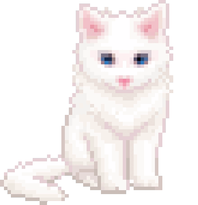

Навыки
Перевод:
- Письменный перевод с английского на русский: статьи, посты, субтитры, переписка.
- Художественный и адаптивный перевод — умею передавать смысл, а не слова.
- Работа с CAT-инструментами и глоссариями (DeepL, Google Translate).
Изучение языков:
- Английский — уверенное понимание (чтение, аудирование, переписка), B1–B2.
- Испанский — начинающий уровень (A1–A2): базовая грамматика, Presente, ser/estar, повседневные фразы.
Межкультурная коммуникация:
- Понимаю культурные контексты англо- и испаноязычного мира.
- Опыт общения с носителями в языковых чатах и на разговорных клубах.
Проекты
- Разговорный клуб / языковой обмен — организую встречи «английский ↔ испанский» для практики с другими учащимися.
- Переводческий мини-блог «Puente» — перевожу короткие англоязычные статьи и посты на русский, добавляю культурные комментарии. Платформа: Telegram-канал / блог.
- Мини-курс «Английский для чтения» — набор карточек и шпаргалок для тех, кто хочет понимать тексты, а не говорить. Anki-колода + PDF.
Обратная связь
